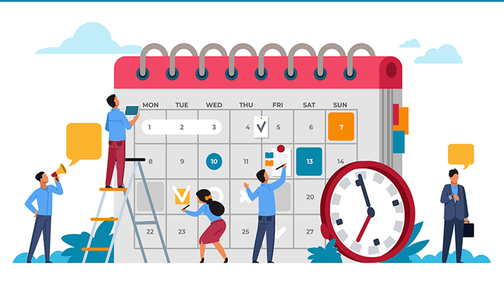

|
About Me | Home | Personal Details | Curriculum | Curriculum Vitae | Ability |
|
Ability
1.CommunicationI have the ability to communicate well with people. This ability helps me express my thoughts in both oral and written formats. 
2.Critical ThinkingI also have the ability to think critically. I use critical skills while writing research papers and solving math problems. These skills can help me solve complex problems, create new solutions and make decisions. 3.Time ManagementI use time management to plan their schedules and complete their educational tasks on time
|


|
Copyright © 2022 Siti Suhanie Binti Hurmat Recommended Browser Google Chrome Version 102.0.5005.115. Last Updated 15 June 2022. All Rights Reserved. |